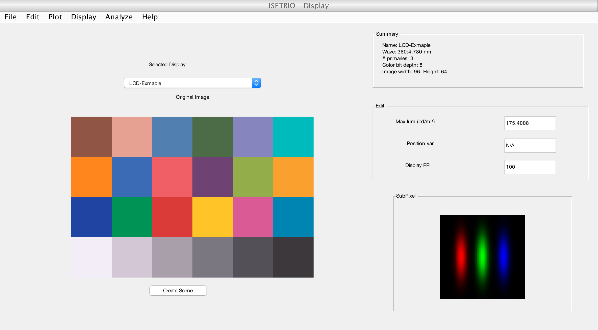

Contents
t_displayCreation
This tutorial explains how to create an ISET display structure using measurement data
HJ/JEF, Stanford, 2015
% Initialize ISET
ieInit;
Setting up basic display properties
Display name This is identifier of the display instance.
d.name = 'LCD-Exmaple'; % Type % This field should always be 'display' d.type = 'display'; % Dispaly resolution % % Resolution is specified in units of pixels per inch (dpi or ppi). This % field is a scalar in current ISET system, meaning that the horizontal and % vertical resolutions of display are the same (which is true for most % displays). Also, we assume that resolution for all primaries are the % same. d.dpi = 100; % Viewing distance % % This field specifies the distance between the observer and the display in % meters. Viewing distance is not an essential property of the display. But % it is widely used in converting the image size on display to field of % view. If it's unkwown or you are not using it, set it to any arbitray % value d.dist = 0.5; % Emissive or Reflective % % This field indicate whether the display is a emissive display or % reflective display. CRT, LCD, OLED are all emissive displays. d.isEmissive = true;
Spectral power distribution (spd)
Wavelength samples
This field is a column vector and contains information about which wavelengths the spectral data are sampled. The unit of this field is nm
d.wave = (380:4:780)'; % Spectral power distribution % % This field contains measurement data for averaged primary power % distribution in energy units (watts/sr/m2/nm). SPD is usually measured % with spectrometer. Note that the values in this field is the averaged % value, which is equal to peak spd (primary chemical spd) times the fill % factor of the primary % % Here, for simplicity, we create the display with R,G,B spd in Gaussian % shapes d.spd = 4e-3 * exp(-bsxfun(@minus, d.wave, [620 520 460]).^2/1000);
Gamma Table
Gama table
Gamma table describes the relationship between the quantized digital input and normalized linear output. The number of quantized levels are referred as color bitdepth of the display. Gamma table can be measured with spectrometer. Gamma table for primaries can be different.
Here, for simplicity, we generate a display gamma table with a exponential function and assume gamma table for different primaries are the same
d.gamma = repmat(linspace(0, 1, 256)'.^2.2, [1, 3]);
Ambient
SPD of display dark level
This field describes the SPD of display when all primaries are turned to lowest level. If black is black, this field should be a vector of zeros. However, for most LCD, the 'black' spd exists
Here, for simplicity, we set black to black
d.ambient = zeros(length(d.wave), 1);
Pixel layout
Number of pixels in one repeating unit
For most displays, one repeating unit (dixel) contains one individually addressable primary set (pixel). However, in some displays, there could be multiple pixels in one dixel (e.g. Samsung Note series and S-strip). To see an example, you can use code displayPlot(displayCreate('OLED-Samsung'), 'pixel image');
This field records number pixels in one dixel in [row, col] format. Here, we assume one dixel contains only one pixel
d.dixel.nPixels = [1 1]; % Spatial intensity distribution % % This field describes the relative spatial intensity of each primary % within one dixel. That is, the field specifies, within one dixel, where % should be red/green/blue and how bright (relative) it is. The field % should be of shape MxNxn_primary and it should be normalized to have % sum(sum(d.dixel.intensitymap)) == M*N % % This field can be measured by highly % magnified camera images. % % Here, we generate spatial distribution of RGB primaries with Gaussian N = 128; % sampling rate in one dixel [X, Y] = meshgrid(1:N, 1:N); cx = reshape([N/4 N/2 3*N/4], [1 1 3]); cy = N/2 * ones(1,1,3); % center % generate with Gaussian and normalize it img = exp(-bsxfun(@minus,X,cx).^2/(N/16)^2-bsxfun(@minus,Y,cy).^2/(N/4)^2); d.dixel.intensitymap = N^2 * bsxfun(@rdivide, img, sum(sum(img))); % To visualize the layout, use % vcNewGraphWin; imagescRGB(d.dixel.intensitymap); % Pixel control information % % This field describes which areas are independent addressable by different % pixels in one dixel. This field should be in same shape as intensity map % and the values in this field should be integers between one and number of % pixels in that dixel (prod(d.dixel.nPixels)). Entry value at position % (i,j,p) equals k means that the p-th primary at position (i, j) in dixel % is controlled by the k-th pixel. % % If there is only one pixel in the dixel, this field should all be one, % meaning that they are all controlled by the first (and the only) pixel. % % Here, because we only have one pixel in dixel, we set all control values % to one d.dixel.controlmap = ones(size(d.dixel.intensitymap));
Render function
This field should be a function handle specifying how to map the image onto the display pixels.
In some complicated case, there is no obvious relationship between the input RGB image pixel values and the intensity to be shown on the display. For example, if a dispaly has four primaries (R,G,B,White), it's unclear how to assign values to primaries according to RGB image input. Thus, we need a function to specify this conversion. See render_lcd_samsung_rgbw.m for example. If pixels are interleaved in one dixel, this field should also be used (see render_oled_samsung).
If there is only one pixel in dixel, we can leave this field empty.
d.dixel.renderFunc = [];
Save and visualize
For how to use display structure, see t_displayIntroduction
save(fullfile(isetRootPath, 'data', 'displays', 'dExample.mat'), 'd'); % now we can create it d = displayCreate('dExample'); % have a look vcAddObject(d); displayWindow;